Hitung stok dan terima barang dari ponsel, cukup dengan memindai barcode.
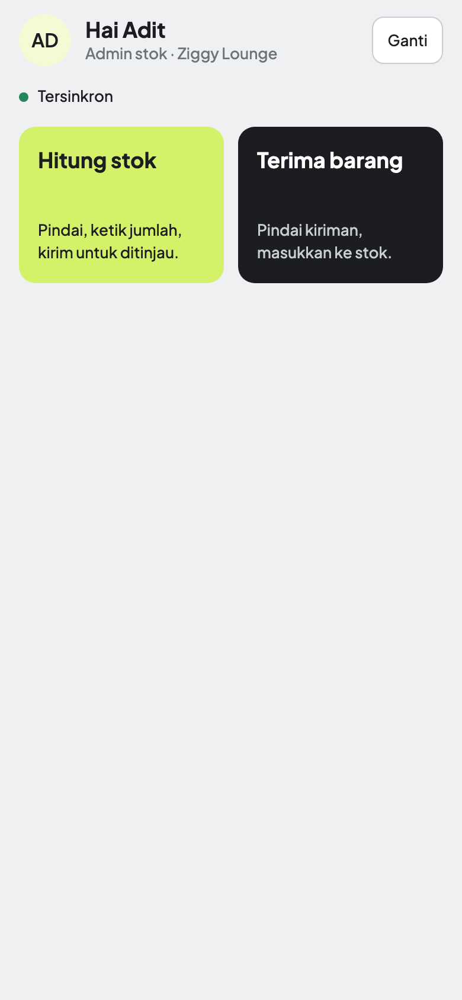
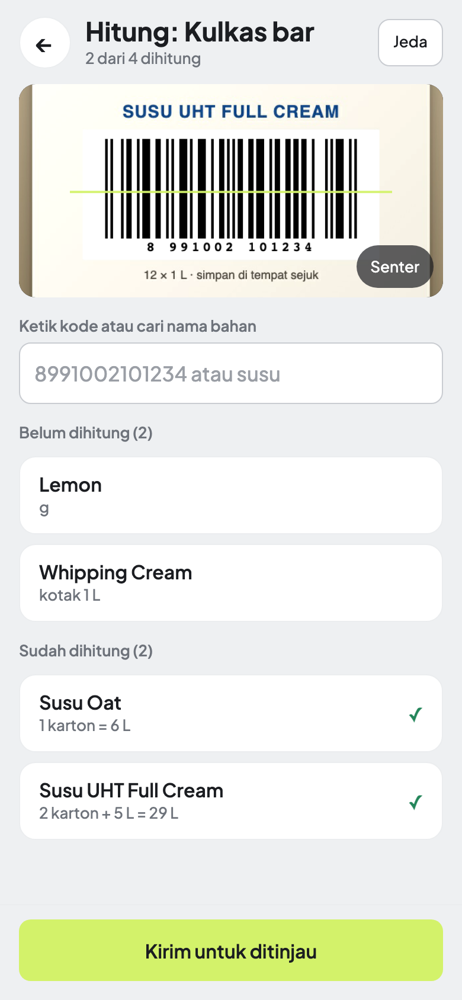
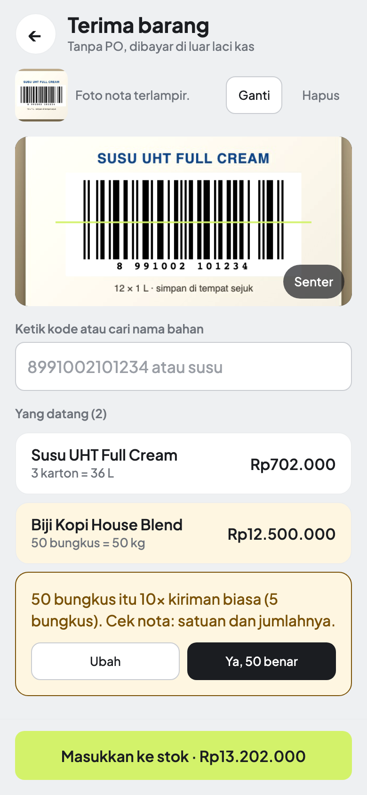
Untuk Takar Stok 1.0.3 · November 2026Gambar di panduan ini memakai data contoh.
Sekilas
Dua pekerjaan, satu ponsel
Takar Stok dibuat untuk dua pekerjaan gudang yang paling sering terlewat. Semua yang dicatat di sini masuk ke Takar yang sama dengan kasir dan laporan.
Hitung stok
Pindai bahan, ketik jumlahnya, lanjut ke bahan berikutnya. Hasilnya dikirim ke manajer untuk disetujui.
Terima barang
Pindai barang yang datang, ketik jumlah dan harganya, lalu masukkan ke stok.
Siapa boleh apa
Pekerjaan
Pemilik
Manajer
Admin stok
Kepala dapur, kasir, barista, dapur
Akuntan
Menghitung stok dan mengirimnya
Ya
Ya
Ya
Ya
Tidak
Mengenalkan barcode baru ke aplikasi
Ya
Ya
Ya
Ya
Ya
Mencatat barang yang datang
Ya
Ya
Ya
Tidak
Tidak
Memasangkan ponsel
Ya
Ya
Tidak
Tidak
Tidak
Menyetujui hitungan
Dilakukan di Takar (laptop atau tablet), bukan di ponsel.
Yang perlu disiapkan
Ponsel Android 7 atau lebih baru yang berkamera, dengan Takar Stok 1.0.3 terinstal (halaman 3).
Nama dan PIN 6 angka Anda, sama seperti di tablet kasir. Belum punya? Minta pemilik.
Ponsel yang sudah dipasangkan oleh pemilik atau manajer (halaman 4).
Angka stok menurut sistem tidak pernah ditampilkan di ponsel. Ini disengaja: hitung apa yang benar-benar ada di rak, bukan apa yang seharusnya ada.
Isi panduan
1. Menginstal aplikasi · hal. 3
2. Memasangkan ponsel · hal. 4
3. Masuk · hal. 5
4. Beranda · hal. 5
5. Hitung stok · hal. 6
6. Barcode yang belum dikenal · hal. 8
7. Terima barang · hal. 9
8. Bila tidak ada sinyal · hal. 10
9. Perlu perhatian · hal. 10
10. Selesai bekerja · hal. 11
Jika ada masalah · hal. 12
Panduan Takar Stok2
Sekali untuk setiap ponsel
1. Menginstal aplikasi
Takar Stok belum ada di Play Store. Aplikasinya diunduh lewat tautan dari Takar, lalu diinstal langsung di ponsel Android 7 atau lebih baru yang berkamera.
Sebelum mulai: ada versi uji coba (1.0.1 atau lebih lama) di ponsel ini? Android tidak bisa menimpanya, jadi versi itu harus dihapus dulu. Yang ikut hilang, untuk setiap orang di ponsel itu: hitungan yang Dijeda, kiriman yang sedang diisi, catatan di Perlu perhatian, dan yang belum terkirim. Jadi, minta setiap orang masuk dan menyelesaikan semuanya sampai Beranda menulis Tersinkron. Baru hapus aplikasinya.
Pemilik membuka Takar di laptop, lalu Lainnya → Tim & perangkat. Di kotak Aplikasi Android, klik kanan Unduh aplikasi stok (Takar Stok) (di Mac: klik dua jari), pilih Salin alamat link (di Safari: Salin Tautan), dan kirim tautannya ke ponsel, misalnya lewat WhatsApp.
Di ponsel, buka tautan itu. Bila Google Drive menulis bahwa file ini tidak dapat dipindai, ketuk Tetap download.
Chrome bisa memperingatkan bahwa file APK dapat membahayakan perangkat. File ini dari restoran Anda sendiri: ketuk Tetap download.
Ketuk Buka pada pemberitahuan unduhan, atau buka Takar-Stok-1.0.3.apk di folder Download lewat aplikasi File (di Samsung: File Saya). Bila Android meminta izin, ketuk Setelan (di Samsung dan sebagian ponsel: Pengaturan), aktifkan Izinkan dari sumber ini, lalu tekan tombol kembali.
Ketuk Instal. Bila Google Play Protect memperingatkan bahwa developer aplikasi ini tidak dikenal, buka detailnya, lalu pilih untuk tetap menginstal (tulisannya berbeda di tiap ponsel). Setelah itu ketuk Buka dan lanjutkan dengan memasangkan ponsel (halaman 4).
Versi berikutnya diinstal dengan cara yang sama dan menimpa versi yang ada. Catatan yang tersimpan di ponsel tetap aman, dan ponsel tidak perlu dipasangkan lagi.
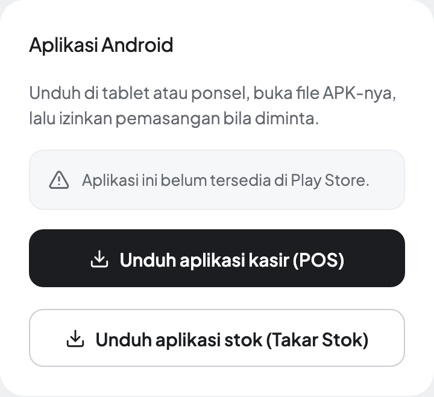
Langkah 1: kotak Aplikasi Android di Takar. Hanya pemilik yang melihatnya.
Panduan Takar Stok3
Sekali untuk setiap ponsel · pemilik atau manajer
2. Memasangkan ponsel
Takar hanya menerima catatan dari ponsel yang sudah dipasangkan. Ini dilakukan satu kali untuk setiap ponsel, dan sekali lagi bila aplikasinya pernah dihapus.
Buka Takar Stok. Di ponsel yang belum pernah dipakai, layar pertamanya adalah Masuk dengan email.
Isi email dan kata sandi pemilik atau manajer, lalu ketuk Masuk.
Ketuk Pasangkan ponsel ini. Beranda terbuka: ponsel sudah siap.
Ketuk Ganti di kanan atas, supaya staf masuk dengan namanya sendiri.
Staf lain yang masuk di ponsel yang belum dipasangkan hanya melihat pesan “Ponsel ini belum dipasangkan. Minta pemilik atau manajer masuk di ponsel ini sekali.”
Setelah seseorang pernah masuk, ponsel mengingat daftar nama staf. Sejak itu layar pertamanya adalah pilihan nama (halaman 5). Pemilik atau manajer yang memakai kata sandi, bukan PIN 6 angka, masuk lewat Masuk dengan email di bawah daftar nama.
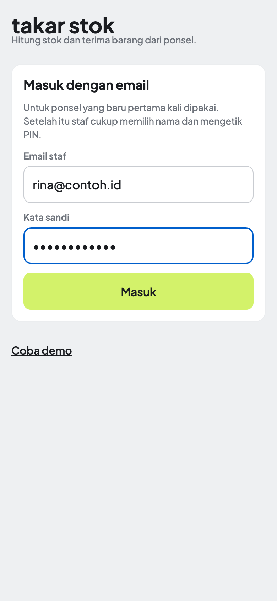
Langkah 1 dan 2: masuk dengan email
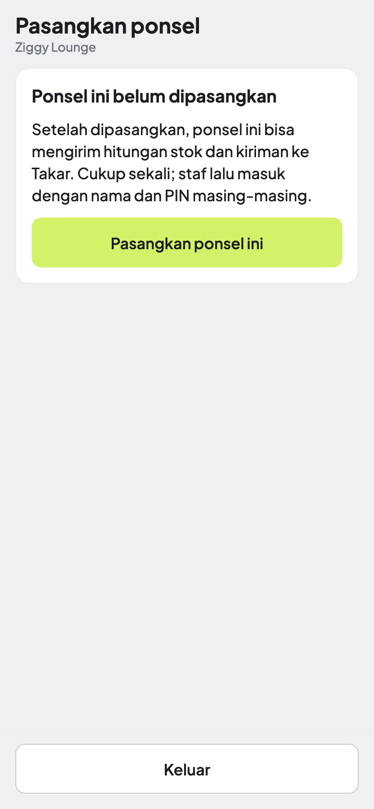
Langkah 3: pasangkan ponsel
Panduan Takar Stok4
3. Masuk
Ketuk nama Anda.
Ketik PIN 6 angka. Angka keenam langsung membawa Anda masuk.
Salah pilih nama? Ketuk Bukan Anda? Pilih nama.
Nama Anda belum ada? Akun baru dibuat oleh pemilik. Akun yang nonaktif bisa diaktifkan lagi oleh pemilik atau manajer. Daftar nama di ponsel baru diperbarui saat ada yang masuk. Sementara itu, ketuk Masuk dengan email, lalu isi email Anda dan PIN Anda sebagai kata sandi.
4. Beranda
Nama dan peran Anda di atas. Semua yang Anda catat tersimpan atas nama ini.
Tersinkron berarti semua catatan sudah terkirim, kecuali yang ada di Perlu perhatian.
Hitung stok dan Terima barang: dua pekerjaan utama.
Dijeda: hitungan yang belum selesai. Ketuk untuk melanjutkan.
Terkirim hari ini: yang sudah Anda kirim hari ini.
Coba demo hanya untuk latihan: yang dicatat di sana tidak masuk ke Takar. Beranda demo bertanda Demo. Keluar dengan Ganti.
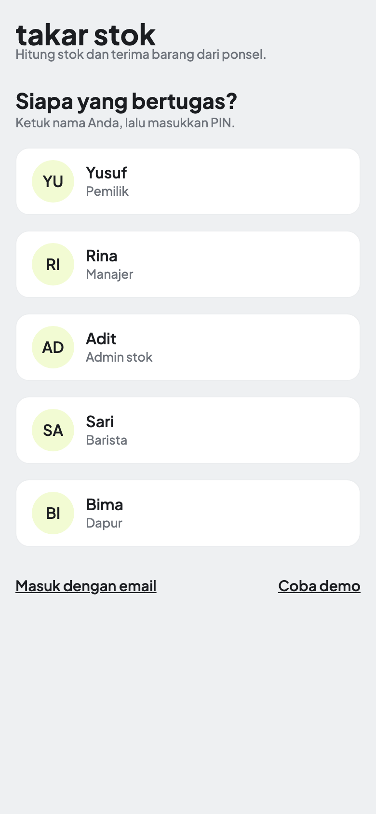
Ketuk nama Anda
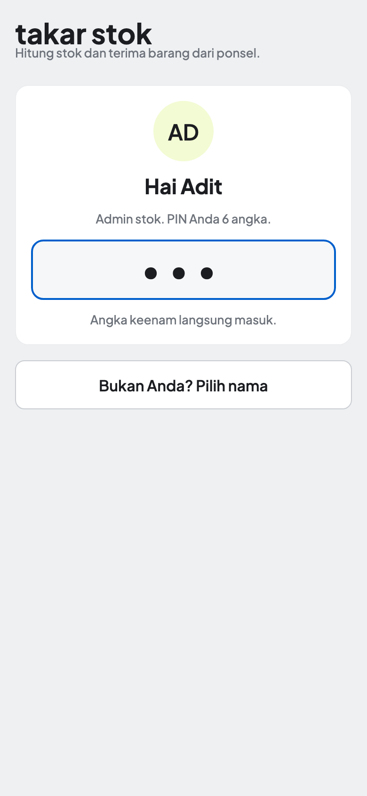
Ketik PIN 6 angkaBeranda
Panduan Takar Stok5
Semua staf
5. Hitung stok
Hitung per area simpan, satu orang dengan satu ponsel untuk setiap area. Jangan bagi satu area ke dua orang: bila dua hitungan berisi bahan yang sama, angkanya tidak dijumlahkan.
Di Beranda ketuk Hitung stok, pilih areanya (misalnya Kulkas bar), lalu ketuk Mulai menghitung.
Arahkan kamera ke barcode bahan sampai garis hijau mengenai barcode. Bahannya terbuka sendiri.
Bahan tanpa barcode: ketuk namanya di daftar Belum dihitung, atau ketik namanya di kolom Ketik kode atau cari nama bahan.
Ketik berapa kemasan yang masih penuh, lalu sisa isi kemasan yang sudah terbuka: misalnya 5 untuk 5 L, bukan 1 untuk satu karton. Tombol mlL atau gkg mengganti satuan sisa itu. Bahan tanpa kemasan hanya punya satu kotak, Jumlah.
Ketuk Simpan, pindai berikutnya. Ulangi sampai daftar Belum dihitung habis.
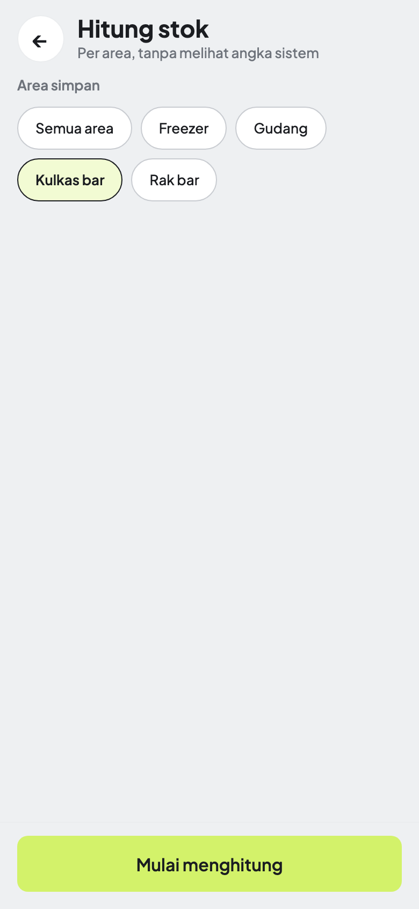
Langkah 1: pilih areaLangkah 2 dan 3: kamera di atas, daftar bahan di bawah
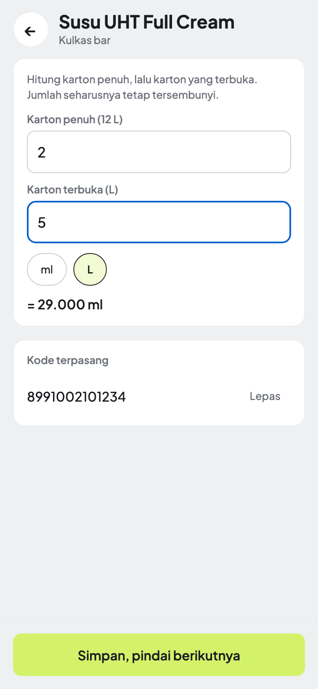
Langkah 4: 2 karton penuh, ditambah 5 L dari karton terbuka
Panduan Takar Stok6
Hitung stok, lanjutan
Mengirim hitungan
Setelah selesai, ketuk Kirim untuk ditinjau, lalu Kirim.
Hitungan muncul di Terkirim hari ini dengan tulisan “Menunggu persetujuan manajer”. Tulisan itu tidak berubah di ponsel. Stok di Takar berubah setelah manajer menyetujuinya.
Yang perlu diingat
Kotak kosong berarti belum dihitung. Bila barangnya memang habis, ketik 0 di kotaknya. Yang belum dihitung tidak ikut terkirim.
Boleh berhenti kapan saja. Ketuk Jeda di kanan atas. Semua yang sudah diketik tersimpan di ponsel, juga bila aplikasinya tertutup. Lanjutkan dari Dijeda di Beranda.
Bahan yang baru disimpan tidak langsung terbuka lagi walaupun barcode-nya masih di depan kamera. Untuk membukanya lagi, ketuk namanya di daftar Sudah dihitung. Menemukan bahan itu lagi di tempat lain? Ketik jumlah seluruhnya: angka baru menggantikan angka lama.
Memindai bahan dari area lain? Aplikasi bertanya dulu. Ketuk Tambahkan bila barangnya memang ada di area yang sedang dihitung, atau Batal bila tidak (gambar di halaman 8).
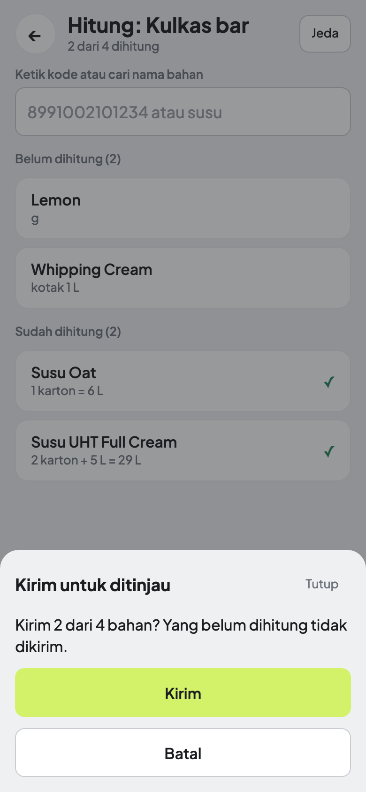
Langkah 6: periksa, lalu Kirim
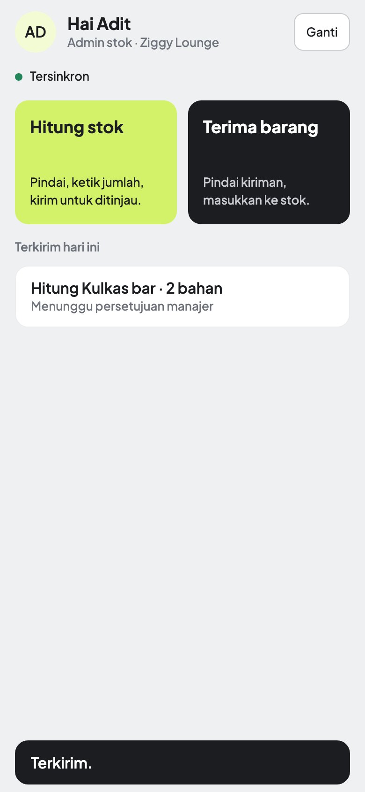
Langkah 7: sudah terkirim, menunggu manajer
Panduan Takar Stok7
Semua staf
6. Barcode yang belum dikenal
Pertama kali sebuah barcode dipindai, aplikasi belum tahu itu bahan apa. Cukup kenalkan satu kali. Setelah itu semua ponsel di restoran mengenalnya.
Pindai barcode-nya. Bisa juga ketik angka di bawah barcode di kolom pencarian, lalu ketuk tombol cari di keyboard. Muncul Kode … belum dikenal.
Cari nama bahannya, lalu ketuk.
Di Kode ini untuk, pilih tempat barcode itu tercetak. Awalnya terpilih satuan, untuk satu botol atau satu bungkus. Barcode di dus? Pilih dusnya, misalnya dus 6 pcs.
Ketuk Simpan.
Salah memilih bahan? Buka bahan itu saat menghitung, lihat Kode terpasang, ketuk Lepas, lalu pindai lagi dan pilih bahan yang benar.
Bahan tanpa barcode seperti buah, es batu atau sirup racikan tidak perlu dikenalkan. Cari namanya saja.
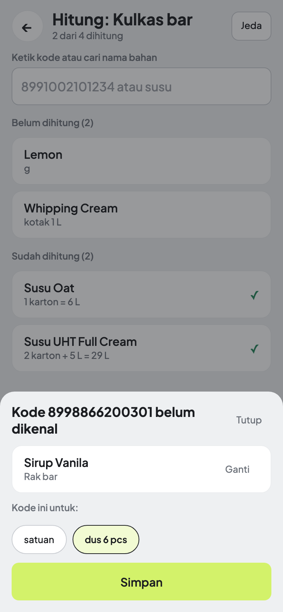
Langkah 2 sampai 4: pilih bahan dan kemasannya
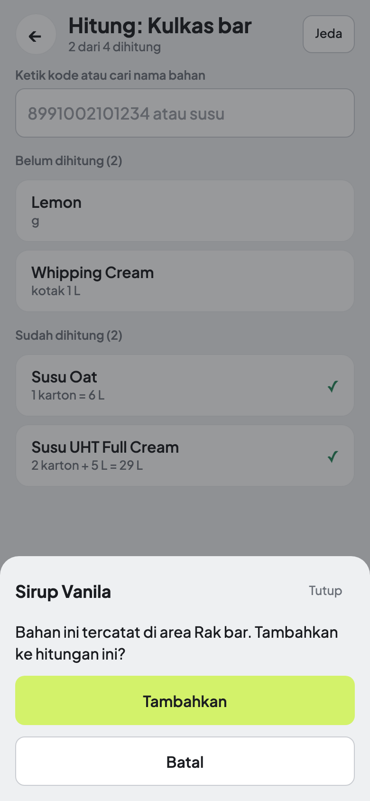
Bahan dari area lain: Tambahkan bila barangnya memang ada di sini
Panduan Takar Stok8
Pemilik · manajer · admin stok
7. Terima barang
Di Beranda ketuk Terima barang.
Isi Pemasok / nota, misalnya “CV Susu Jaya, nota 1203”. Bila perlu, ketuk Foto nota (opsional) untuk melampirkan foto notanya.
Pindai barang yang datang, atau cari namanya. Periksa kemasan yang terpilih di atas Jumlah, terutama bila bahannya dicari lewat nama: harus sama dengan di nota (misalnya karton (12 L), bukan L). Isi Jumlah dan Harga per kemasan itu, lalu ketuk Tambah. Harga terakhir sudah terisi: ubah bila berbeda, kosongkan bila belum tahu.
Ulangi untuk setiap bahan. Setiap bahan menjadi satu baris. Memindai bahan yang sudah ada di daftar membuka barisnya lagi: isi jumlah seluruhnya, bukan tambahannya.
Bila muncul kotak kuning, cocokkan dengan nota. Ketuk Ubah untuk memperbaiki, atau Ya, … benar bila memang sebanyak itu.
Ketuk Masukkan ke stok · Rp…. Stok bertambah begitu kiriman terkirim, tanpa menunggu persetujuan.
Kotak kuning muncul bila jumlahnya lebih dari 5 kali kiriman biasa, atau kurang dari seperlimanya. Hampir selalu ini salah satuan atau salah ketik: 50 bungkus padahal 5.
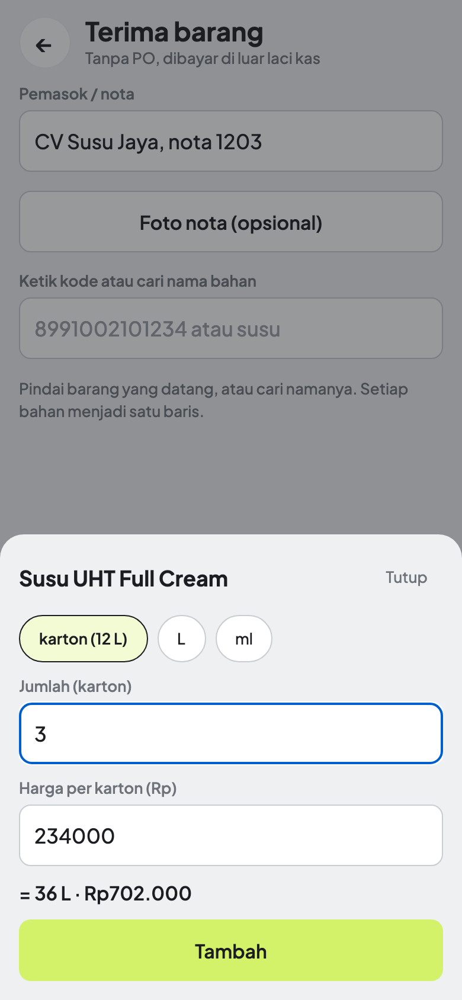
Langkah 3: jumlah dan harga per kemasanLangkah 5: kotak kuning minta dicek
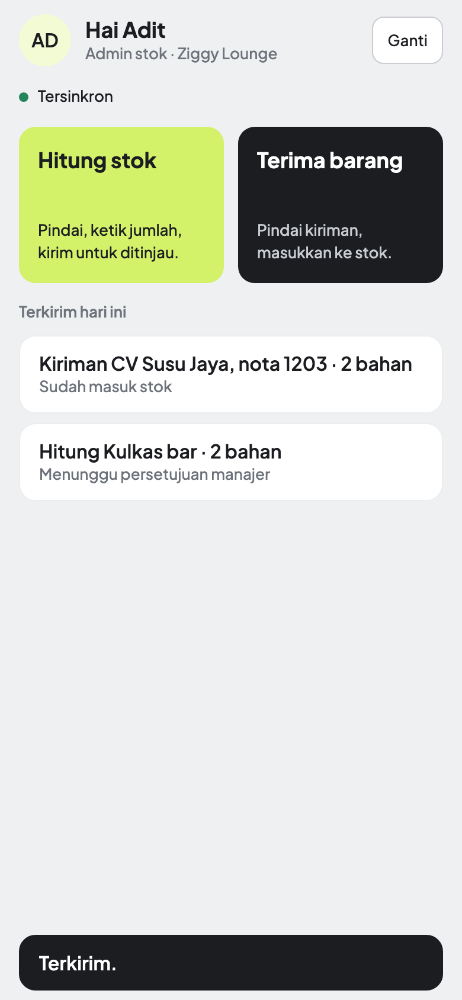
Langkah 6: kiriman sudah masuk stok
Panduan Takar Stok9
8. Bila tidak ada sinyal
Tetap bekerja seperti biasa. Hitungan dan kiriman disimpan di ponsel, lalu terkirim sendiri saat ada sinyal, selama Takar Stok terbuka.
Beranda menampilkan 1 belum terkirim sampai semuanya terkirim. Selama itu Ganti belum bisa dipakai (halaman 11).
Aplikasi sempat ditutup? Buka lagi saat ada sinyal. Tarik layar Beranda ke bawah untuk mengirim sekarang.
Masuk dengan PIN butuh sinyal. Setelah masuk, pekerjaan bisa dilakukan tanpa sinyal.
9. Perlu perhatian
Sesekali Takar menolak sebuah catatan. Catatan itu pindah ke Perlu perhatian di Beranda, lengkap dengan alasannya. Catatan lain tetap terkirim.
Kirim ulang mengirimnya lagi sebagai catatan baru.
Hapus membuangnya.
Alasan yang tertulis
Yang dilakukan
Catatan ini tertunda lebih dari 7 hari, atau jam ponsel salah.
Betulkan jam ponsel, lalu Kirim ulang.
Ponsel ini belum dipasangkan.
Minta pemilik atau manajer memasangkannya, lalu Kirim ulang.
Peran Anda tidak boleh melakukan ini.
Hapus, lalu minta admin stok atau manajer yang mencatat.
Hitungan ini sudah disetujui manajer.
Hapus. Tidak perlu dikirim lagi.
… sudah tidak ada di Takar.
Hapus, lalu catat atau hitung lagi.
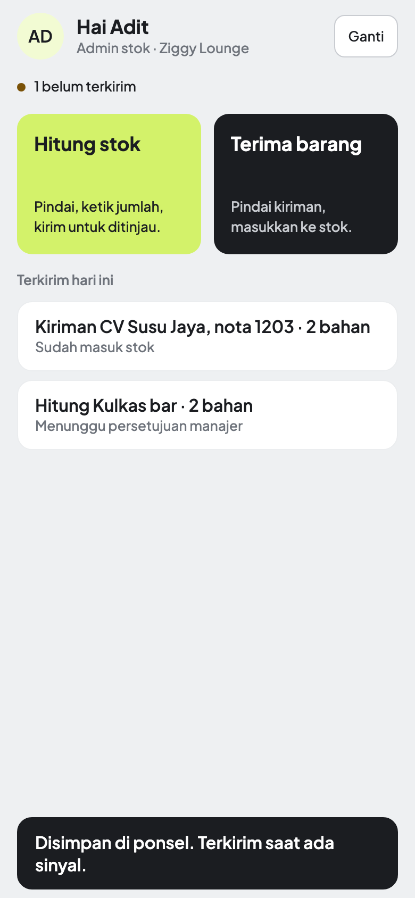
Tanpa sinyal: disimpan di ponsel dulu
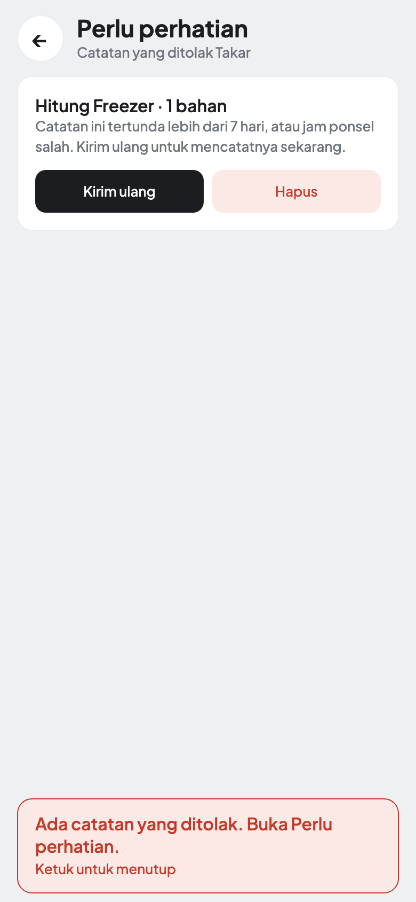
Perlu perhatian: alasan dan dua pilihan
Panduan Takar Stok10
10. Selesai bekerja
Ketuk Ganti di Beranda, supaya orang berikutnya masuk dengan namanya sendiri.
Ganti menolak: “Masih ada … catatan belum terkirim”? Catatan Anda harus terkirim dulu, karena tersimpan atas nama Anda. Cari sinyal, tarik layar Beranda ke bawah, dan tunggu sampai tertulis Tersinkron. Masih ditolak? Buka Perlu perhatian, lalu pilih Kirim ulang atau Hapus untuk setiap catatan di sana.
Hitungan yang dijeda dan kiriman yang belum dimasukkan tetap milik Anda. Setelah Ganti, orang berikutnya tidak melihatnya. Lanjutkan dengan masuk lagi di ponsel yang sama. Di ponsel lain, keduanya tidak ada.
Ganti hanya mengeluarkan Anda dari ponsel ini. Bila Anda juga masuk di tablet kasir atau laptop, di sana Anda tetap masuk.
Ponsel tidak mengunci sendiri. Jangan tinggalkan ponsel dalam keadaan masuk: apa pun yang dicatat sesudahnya tersimpan atas nama Anda.
Ganti ada di kanan atas Beranda
Panduan Takar Stok11
Jika ada masalah
Yang terjadi
Yang dilakukan
“Aplikasi tidak terpasang” (atau “tidak terinstal”) saat menginstal
Ada versi uji coba di ponsel itu? Ikuti kotak kuning di halaman 3, lalu instal lagi. Bila tidak ada, unduh ulang file-nya. Ponselnya juga harus Android 7 atau lebih baru.
Android tidak mengizinkan menginstal aplikasi dari sumber ini
Ketuk Setelan (atau Pengaturan) pada pesan itu, aktifkan Izinkan dari sumber ini, lalu tekan tombol kembali (halaman 3).
Kamera tidak muncul, ada tombol Izinkan kamera
Ketuk tombol itu, lalu pilih Saat aplikasi digunakan (atau Izinkan). Bila tertulis kamera diblokir, izinkan kamera untuk Takar Stok di pengaturan ponsel.
Barcode tidak terbaca
Dekatkan atau jauhkan sedikit. Ketuk Senter bila gelap. Bisa juga ketik angka di bawah barcode lalu ketuk tombol cari di keyboard, atau cari nama bahannya.
“PIN salah atau akun tidak aktif”
Ketik ulang dengan teliti. Lupa PIN? Minta pemilik menggantinya. Akun dinonaktifkan? Minta pemilik atau manajer mengaktifkannya lagi.
“Perlu internet untuk masuk.”
Cari sinyal dulu. Setelah masuk, menghitung dan menerima barang bisa tanpa sinyal.
“Sesi berakhir. Masuk lagi; catatan yang belum terkirim tetap tersimpan.”
Masuk lagi dengan nama dan PIN Anda. Catatan yang belum terkirim tidak hilang dan terkirim sendiri setelah Anda masuk.
“Masih ada … catatan belum terkirim” saat Ganti
Cari sinyal dan tunggu Tersinkron. Masih ditolak? Selesaikan dulu Perlu perhatian (halaman 11).
Panduan Takar Stok12
Jika ada masalah, lanjutan
Yang terjadi
Yang dilakukan
“Ponsel ini belum dipasangkan”
Minta pemilik atau manajer memasangkannya (halaman 4).
Daftar bahan kosong, atau “Belum ada bahan di ponsel ini”
Saat ada sinyal, tarik layar Beranda ke bawah untuk memuat daftar bahan dari Takar.
Bahan baru belum muncul di daftar
Bahan ditambahkan di Takar oleh admin stok atau manajer. Setelah itu tarik layar Beranda ke bawah. Hitungan yang sudah dimulai tidak ikut bertambah: pindai barcode bahan itu, atau hitung di hitungan baru.
Salah mengetik, tetapi sudah terkirim
Hitungan: beri tahu manajer sebelum ia menyetujuinya. Kiriman: minta manajer mengoreksi stoknya di Takar.
Ponsel hilang
Beri tahu pemilik atau manajer. Mereka menonaktifkan akun orang yang terakhir masuk di ponsel itu. Selama nonaktif, orang itu juga tidak bisa masuk di tablet kasir atau laptop.
Belum ada di versi ini
Menerima barang berdasarkan PO (di Takar lewat laptop), dan membayar kiriman dari laci kas (di Takar, hanya oleh pemilik atau manajer yang sedang membuka sif kasir).
Menyetujui hitungan dari ponsel.
Mencatat bahan terbuang dan batch olahan.
Kunci layar otomatis.
Melepas ponsel yang hilang dari Takar (untuk sementara: lihat Ponsel hilang di atas).